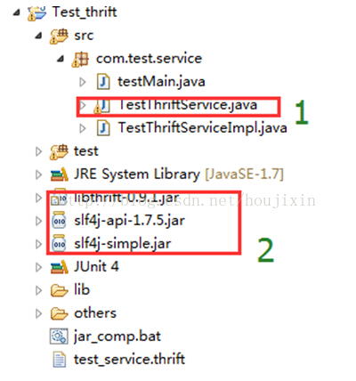

<!DOCTYPE html>


<html lang="zh-Hans">
  

    <head>
      <meta charset="utf-8" />
        
      <meta name="description" content="Technical output and problem solving record" />
      
      <meta
        name="viewport"
        content="width=device-width, initial-scale=1, maximum-scale=1"
      />
      <title>WebService组件——Thrift用法总结 |  Tunan`s Blog</title>
  <meta name="generator" content="hexo-theme-ayer">
      
      <link rel="shortcut icon" href="/favicon.ico" />
       
<link rel="stylesheet" href="/dist/main.css">

      <link
        rel="stylesheet"
        href="https://cdn.jsdelivr.net/gh/Shen-Yu/cdn/css/remixicon.min.css"
      />
      
<link rel="stylesheet" href="/css/custom.css">
 
      <script src="https://cdn.jsdelivr.net/npm/pace-js@1.0.2/pace.min.js"></script>
       
 

      <link
        rel="stylesheet"
        href="https://cdn.jsdelivr.net/npm/@sweetalert2/theme-bulma@5.0.1/bulma.min.css"
      />
      <script src="https://cdn.jsdelivr.net/npm/sweetalert2@11.0.19/dist/sweetalert2.min.js"></script>

      <!-- mermaid -->
      
      <style>
        .swal2-styled.swal2-confirm {
          font-size: 1.6rem;
        }
      </style>
    </head>
  </html>
</html>


<body>
  <div id="app">
    
      
    <main class="content on">
      <section class="outer">
  <article
  id="post-WebService组件01——Thrift"
  class="article article-type-post"
  itemscope
  itemprop="blogPost"
  data-scroll-reveal
>
  <div class="article-inner">
    
    <header class="article-header">
       
<h1 class="article-title sea-center" style="border-left:0" itemprop="name">
  WebService组件——Thrift用法总结
</h1>
 

      
    </header>
     
    <div class="article-meta">
      <a href="/2022/07/22/WebService%E7%BB%84%E4%BB%B601%E2%80%94%E2%80%94Thrift/" class="article-date">
  <time datetime="2022-07-22T06:32:29.000Z" itemprop="datePublished">2022-07-22</time>
</a> 
  <div class="article-category">
    <a class="article-category-link" href="/categories/Web-Service/">Web Service</a>
  </div>
  
<div class="word_count">
    <span class="post-time">
        <span class="post-meta-item-icon">
            <i class="ri-quill-pen-line"></i>
            <span class="post-meta-item-text"> Word count:</span>
            <span class="post-count">2.9k</span>
        </span>
    </span>

    <span class="post-time">
        &nbsp; | &nbsp;
        <span class="post-meta-item-icon">
            <i class="ri-book-open-line"></i>
            <span class="post-meta-item-text"> Reading time≈</span>
            <span class="post-count">11 min</span>
        </span>
    </span>
</div>
 
    </div>
      
    <div class="tocbot"></div>


  
    <div class="article-entry" itemprop="articleBody">
       
  <p>本文主要总结一下什么是Thrift？以及Thrift应该怎样优雅的去用。<span id="more"></span></p>
<h1 id="Thrift介绍"><a href="#Thrift介绍" class="headerlink" title="Thrift介绍"></a>Thrift介绍</h1><p>Thrift是Facebook于2007年开发的跨语言的<code>rpc</code>服务框架，提供多语言的编译功能，并提供多种服务器工作模式；用户通过Thrift的IDL（接口定义语言）来描述接口函数及数据类型，然后通过Thrift的编译环境生成各种语言类型的接口文件，用户可以根据自己的需要采用不同的语言开发客户端代码和服务器端代码。</p>
<p>例如，我想开发一个快速计算的RPC服务，它主要通过接口函数<code>getInt</code>对外提供服务，这个RPC服务的<code>getInt</code>函数使用用户传入的参数，经过复杂的计算，计算出一个整形值返回给用户；服务器端使用java语言开发，而调用客户端可以是java、c、python等语言开发的程序，在这种应用场景下，我们只需要使用Thrift的IDL描述一下<code>getInt</code>函数（以.thrift为后缀的文件），然后使用Thrift的多语言编译功能，将这个IDL文件编译成C、java、python几种语言对应的“特定语言接口文件”（每种语言只需要一条简单的命令即可编译完成），这样拿到对应语言的“特定语言接口文件”之后，就可以开发客户端和服务器端的代码了，开发过程中只要接口不变，客户端和服务器端的开发可以独立的进行。</p>
<p>Thrift为服务器端程序提供了很多的工作模式，例如：线程池模型、非阻塞模型等等，可以根据自己的实际应用场景选择一种工作模式高效地对外提供服务；</p>
<p>下面先给出Thrift的官网，想自己学习的小伙伴可以直接看一下这些手册：</p>
<p>（1）  Thrift的官方网站：<a target="_blank" rel="noopener" href="http://thrift.apache.org/">http://thrift.apache.org/</a></p>
<p>（2）  Thrift官方下载地址：<a target="_blank" rel="noopener" href="http://thrift.apache.org/download">http://thrift.apache.org/download</a></p>
<p>（3）  Thrift官方的IDL示例文件（自己写IDL文件时可以此为参考）：</p>
<p><a target="_blank" rel="noopener" href="https://git-wip-us.apache.org/repos/asf?p=thrift.git;a=blob_plain;f=test/ThriftTest.thrift;hb=HEAD">https://git-wip-us.apache.org/repos/asf?p=thrift.git;a=blob_plain;f=test/ThriftTest.thrift;hb=HEAD</a></p>
<h1 id="环境搭建"><a href="#环境搭建" class="headerlink" title="环境搭建"></a>环境搭建</h1><p>这里给出一个知乎回答，很详细<a target="_blank" rel="noopener" href="https://zhuanlan.zhihu.com/p/143566414">Windows下的Thrift环境搭建及简单教程 - 知乎 (zhihu.com)</a></p>
<h1 id="使用Thrift"><a href="#使用Thrift" class="headerlink" title="使用Thrift"></a>使用Thrift</h1><h2 id="1、编写IDL文件"><a href="#1、编写IDL文件" class="headerlink" title="1、编写IDL文件"></a>1、编写IDL文件</h2><p>使用Thrift开发程序，首先要做的事情就是使用IDL对接口进行描述， 然后再使用Thrift的多语言编译能力将接口的描述文件编译成对应语言的版本，本文中将IDL对接口的描述文件称为“Thrift文件”。</p>
<h3 id="（1）如何编写"><a href="#（1）如何编写" class="headerlink" title="（1）如何编写"></a>（1）如何编写</h3><p>使用IDL对接口进行描述的thrift文件命名一般都是以“.thrift”作为后缀：XXX.thrift，可以在该文件的开头为该文件加上命名空间限制，格式为：namespace语言 命名空间的名字；例如：</p>
<p><code>namespace javacom.test.service</code></p>
<p>IDL文件中对所有接口函数的描述都放在service中，service的名字可以自己指定，该名字也将被用作生成的特定语言接口文件的名字，接口函数需要对参数使用序号标号，除最后一个接口函数外，要以“，”结束对函数的描述。</p>
<p>例如，下面一个IDL描述的Thrift文件（该Thrift文件的文件名为：test_service.thrift）的全部内容：</p>
<pre><code class="thrift">namespace java com.test.service

include &quot;thrift_datatype.thrift&quot;

service TestThriftService
&#123;

    /**
    *value 中存放两个字符串拼接之后的字符串
    */
    thrift_datatype.ResultStr getStr(1:string srcStr1, 2:string srcStr2),
    
    thrift_datatype.ResultInt getInt(1:i32 val)
    
&#125;
</code></pre>
<p>这里的TestThriftService就被用作生成的特定语言的文件名，例如我想用该Thrift文件生成一个java版本的接口文件，那么生成的java文件名就是：TestThriftService.java。</p>
<h3 id="（2）编写IDL文件需要注意的问题"><a href="#（2）编写IDL文件需要注意的问题" class="headerlink" title="（2）编写IDL文件需要注意的问题"></a>（2）编写IDL文件需要注意的问题</h3><ol>
<li>函数的参数要一次用数字标好序，需要从1开始，形式为：“序号:参数名”；</li>
<li>每个函数后要加上一个逗号，最后一个函数不用加；</li>
<li>在IDL中可以使用/**/来注释</li>
</ol>
<h3 id="（3）IDL支持的数据类型"><a href="#（3）IDL支持的数据类型" class="headerlink" title="（3）IDL支持的数据类型"></a>（3）IDL支持的数据类型</h3><p>IDL大小写敏感，它共支持以下几种基本的数据类型：</p>
<ul>
<li><strong>string</strong>， 字符串类型，注意是全部小写形式；例如：string aString；</li>
<li><strong>i16</strong>, 16位整形类型，例如：i16 aI16Val；</li>
<li><strong>i32</strong>，32位整形类型，对应C/C++/java中的int类型；例如：   I32  aIntVal；</li>
<li><strong>i64</strong>，64位整形，对应C/C++/java中的long类型；例如：I64 aLongVal；</li>
<li><strong>byte</strong>，8位的字符类型，对应C/C++中的char，java中的byte类型；例如：byte aByteVal；</li>
<li><strong>bool</strong>, 布尔类型，对应C/C++中的bool，java中的boolean类型； 例如：bool aBoolVal；</li>
<li><strong>double</strong>，双精度浮点类型，对应C/C++/java中的double类型；例如：double aDoubleVal；</li>
<li><strong>void</strong>，空类型，对应C/C++/java中的void类型；该类型主要用作函数的返回值，例如：void testVoid()；</li>
</ul>
<p>除了上述基本类型，IDL还支持下面的类型</p>
<ul>
<li><strong>map</strong>，map类型，例如，定义一个map对象：map&lt;i32, i32&gt; newmap;</li>
<li><strong>set</strong>，集合类型，例如，定义set<i32>对象：set<i32> aSet;</li>
<li><strong>list</strong>，链表类型，例如，定义一个list<i32>对象：list<i32> aList;</li>
</ul>
<h3 id="（4）在Thrift文件中自定义数据类型"><a href="#（4）在Thrift文件中自定义数据类型" class="headerlink" title="（4）在Thrift文件中自定义数据类型"></a>（4）<strong>在Thrift文件中自定义数据类型</strong></h3><p>在IDL中支持两种自定义类型：枚举类型和结构体类型，具体如下：</p>
<ul>
<li><p>enum枚举类型，例如</p>
<pre><code class="c">enum Numberz
&#123;
  ONE = 1,
  TWO,
  THREE,
  FIVE = 5,
  SIX,
  EIGHT = 8
&#125;
</code></pre>
<p>注意，枚举类型里没有序号</p>
</li>
<li><p>struct，自定义结构体类型，在IDL中可以自己定义结构体，对应C中的struct，c++中的struct和class，java中的class。例如：</p>
<pre><code class="c">struct TestV1 &#123;
       1: i32 begin_in_both,
       3: string old_string,
       12: i32 end_in_both
&#125;
</code></pre>
<p>注意，在struct定义结构体时需要对每个结构体成员用序号标识：“序号: ”。</p>
</li>
</ul>
<h2 id="2、生成Thrift服务接口文件"><a href="#2、生成Thrift服务接口文件" class="headerlink" title="2、生成Thrift服务接口文件"></a>2、生成Thrift服务接口文件</h2><p>搭建Thrift编译环境之后，使用下面命令即可将IDL文件编译成对应语言的接口文件</p>
<p><code>thrift --gen &lt;language&gt; &lt;Thrift filename&gt;</code></p>
<p>例如：如果使用上面的thrift文件（见上面的代码test_service.thrift）：test_service.thrift生成一个java语言的接口文件，则只需在搭建好thrift编译环境的机子上，执行如下命令即可：</p>
<p><code>thrift --gen java test_service.thrift</code></p>
<p>生成的gen-java的目录，目录下面有com、test、service三级目录，这三级目录也是根据test_service.thrift文件中命名空间的名字：com.test.service生成的，进入目录之后可以看到生成的java语言的接口文件名为：TestThriftService.java，这个文件的名字也是根据test_service.thrift文件的service名字来生成的</p>
<h2 id="3、编写服务端的Java代码"><a href="#3、编写服务端的Java代码" class="headerlink" title="3、编写服务端的Java代码"></a>3、编写服务端的Java代码</h2><p>编写thrift服务器程序需要首先完成下面两步工作：</p>
<ol>
<li>先将上节中的三个jar包添加到工程里</li>
<li>将生成的java接口文件TestThriftService.java拷贝到自己的工程文件中</li>
</ol>
<p></p>
<p>服务端程序需实现TestThriftService.Iface接口，在实现接口中完成自己要提供的服务，服务器端对服务接口实现的代码如下所示：</p>
<pre><code class="java">package com.test.service;
 
import org.apache.thrift.TException;
 
public class TestThriftServiceImpl implements TestThriftService.Iface
&#123;
 
    @Override
    public String getStr(String srcStr1, String srcStr2) throws TException &#123;
        
        long startTime = System.currentTimeMillis();
        String res = srcStr1 + srcStr2; 
        long stopTime = System.currentTimeMillis();
        
        System.out.println(&quot;[getStr]time interval: &quot; + (stopTime-startTime));
        return res;
    &#125;
 
    @Override
    public int getInt(int val) throws TException &#123;
        long startTime = System.currentTimeMillis();
        int res = val * 10; 
        long stopTime = System.currentTimeMillis();
        
        System.out.println(&quot;[getInt]time interval: &quot; + (stopTime-startTime));
        return res;
    &#125;
 
&#125;
</code></pre>
<p>服务器端启动thrift服务框架的程序如下所示，在本例中服务器采用TNonblockingServer工作模式：</p>
<pre><code class="java">package com.test.service;
import org.apache.thrift.TProcessor;
import org.apache.thrift.protocol.TBinaryProtocol;
import org.apache.thrift.server.TNonblockingServer;
import org.apache.thrift.server.TServer;
import org.apache.thrift.transport.TFramedTransport;
import org.apache.thrift.transport.TNonblockingServerSocket;
import org.apache.thrift.transport.TTransportException;
public class testMain &#123;
    private static int m_thriftPort = 12356;
    private static TestThriftServiceImpl m_myService = new TestThriftServiceImpl();
    private static TServer m_server = null;
    private static void createNonblockingServer() throws TTransportException
    &#123;
        TProcessor tProcessor = new TestThriftService.Processor&lt;TestThriftService.Iface&gt;(m_myService);
        TNonblockingServerSocket nioSocket = new TNonblockingServerSocket(m_thriftPort);
        TNonblockingServer.Args tnbArgs = new TNonblockingServer.Args(nioSocket);
        tnbArgs.processor(tProcessor);
        tnbArgs.transportFactory(new TFramedTransport.Factory());
        tnbArgs.protocolFactory(new TBinaryProtocol.Factory());
        // 使用非阻塞式IO，服务端和客户端需要指定TFramedTransport数据传输的方式
        m_server = new TNonblockingServer(tnbArgs);
    &#125;
    public static boolean start()
    &#123;
        try &#123;
            createNonblockingServer();
        &#125; catch (TTransportException e) &#123;
            System.out.println(&quot;start server error!&quot; + e);
            return false;
        &#125;
        System.out.println(&quot;service at port: &quot; + m_thriftPort);
        m_server.serve();
        return true;
    &#125;
    public static void main(String[] args)
    &#123;
        if(!start())
        &#123;
            System.exit(0);
        &#125;
    &#125;
    
&#125;
</code></pre>
<p>在服务器端启动thrift框架的部分代码比较简单，不过在写这些启动代码之前需要先确定服务器采用哪种工作模式对外提供服务，Thrift对外提供几种工作模式，例如：TSimpleServer、TNonblockingServer、TThreadPoolServer、TThreadedSelectorServer等模式，每种服务模式的通信方式不一样，因此在服务启动时使用了那种服务模式，客户端程序也需要采用对应的通信方式。</p>
<p>另外，Thrift支持多种通信协议格式：TCompactProtocol、TBinaryProtocol、TJSONProtocol等，因此，在使用Thrift框架时，客户端程序与服务器端程序所使用的通信协议一定要一致，否则便无法正常通信。</p>
<p>以上述代码采用的TNonblockingServer为例，说明服务器端如何使用Thrift框架，在服务器端创建并启动Thrift服务框架的过程为</p>
<ol>
<li><p>为自己的服务实现类定义一个对象</p>
<p><code>TestThriftServiceImpl m_myService =new TestThriftServiceImpl();</code></p>
<p>这里的TestThriftServiceImpl类就是代码中我们自己定义的服务器端对各服务接口的实现类。</p>
</li>
<li><p>定义一个TProcess对象，在根据Thrift文件生成java源码接口文件TestThriftService.java中，Thrift已经自动为我们定义了一个Processor；后续节中将对这个TProcess类的功能进行详细描述；如代码中的：</p>
<p><code>TProcessor tProcessor = NewTestThriftService.Processor&lt;TestThriftService.Iface&gt;(m_myService);</code></p>
</li>
<li><p>定义一个TNonblockingServerSocket对象，用于tcp的socket通信，如代码中的</p>
<p><code>TNonblockingServerSocket nioSocket = new TNonblockingServerSocket(m_thriftPort);</code></p>
<p>在创建server端socket时需要指明监听端口号，即上面的变量：m_thriftPort。</p>
</li>
<li><p>定义TNonblockingServer所需的参数对象TNonblockingServer.Args；并设置所需的参数，如代码中的：</p>
<pre><code class="java">TNonblockingServer.Args tnbArgs = new TNonblockingServer.Args(nioSocket);
tnbArgs.processor(tProcessor);
tnbArgs.transportFactory(new TFramedTransport.Factory());//通信方式：TFramedTransport
tnbArgs.protocolFactory(new TBinaryProtocol.Factory());//二进制协议：TBinaryProtocol
</code></pre>
<p>在TNonblockingServer模式下我们使用二进制协议：TBinaryProtocol,通信方式采用TFramedTransport，即以帧的方式对数据进行传输。</p>
</li>
<li><p>定义TNonblockingServer对象，并启动该服务，如代码中的：</p>
<pre><code class="java">m_server = new TNonblockingServer(tnbArgs);
…
m_server.serve();
</code></pre>
</li>
</ol>
<h2 id="4、编写客户端代码"><a href="#4、编写客户端代码" class="headerlink" title="4、编写客户端代码"></a>4、编写客户端代码</h2><p>Thrift的客户端代码同样需要服务器开头的那两步：添加三个jar包和生成的java接口文件TestThriftService.java。</p>
<pre><code class="java">         m_transport = new TSocket(THRIFT_HOST, THRIFT_PORT,2000);
         TProtocol protocol = new TBinaryProtocol(m_transport);
         TestThriftService.Client testClient = new TestThriftService.Client(protocol);
        
         try &#123;
             m_transport.open();
             
             String res = testClient.getStr(&quot;test1&quot;, &quot;test2&quot;);
             System.out.println(&quot;res = &quot; + res);
             m_transport.close();
        &#125; catch (TException e)&#123;
                // TODO Auto-generated catch block
                e.printStackTrace();
        &#125;
</code></pre>
<p>编写客户端代码非常简单，只需下面几步即可：</p>
<ol>
<li><p>创建一个传输层对象（TTransport），具体采用的传输方式是TFramedTransport，要与服务器端保持一致，即：</p>
<p><code>m_transport =new TFramedTransport(newTSocket(THRIFT_HOST,THRIFT_PORT, 2000));</code></p>
<p>这里的THRIFT_HOST, THRIFT_PORT分别是Thrift服务器程序的主机地址和监听端口号，这里的2000是socket的通信超时时间；</p>
</li>
<li><p>创建一个通信协议对象（TProtocol），具体采用的通信协议是二进制协议，这里要与服务器端保持一致，即：</p>
<p><code>TProtocol protocol =new TBinaryProtocol(m_transport);</code></p>
</li>
<li><p>创建一个Thrift客户端对象（TestThriftService.Client），Thrift的客户端类TestThriftService.Client已经在文件TestThriftService.java中，由Thrift编译器自动为我们生成，即</p>
<p><code>TestThriftService.Client testClient =new TestThriftService.Client(protocol);</code></p>
</li>
<li><p>打开socket，建立与服务器直接的socket连接，即：</p>
<p><code>m_transport.open();</code></p>
</li>
<li><p>通过客户端对象调用服务器服务函数getStr</p>
<p><code>String res = testClient.getStr(&quot;test1&quot;,&quot;test2&quot;);</code></p>
</li>
<li><p>使用完成关闭socket</p>
<p><code>m_transport.close();</code></p>
</li>
</ol>
 
      <!-- reward -->
      
    </div>
    

    <!-- copyright -->
    
    <div class="declare">
      <ul class="post-copyright">
        <li>
          <i class="ri-copyright-line"></i>
          <strong>Copyright： </strong>
          
          Copyright is owned by the author. For commercial reprints, please contact the author for authorization. For non-commercial reprints, please indicate the source.
          
        </li>
      </ul>
    </div>
    
    <footer class="article-footer">
       
<div class="share-btn">
      <span class="share-sns share-outer">
        <i class="ri-share-forward-line"></i>
        分享
      </span>
      <div class="share-wrap">
        <i class="arrow"></i>
        <div class="share-icons">
          
          <a class="weibo share-sns" href="javascript:;" data-type="weibo">
            <i class="ri-weibo-fill"></i>
          </a>
          <a class="weixin share-sns wxFab" href="javascript:;" data-type="weixin">
            <i class="ri-wechat-fill"></i>
          </a>
          <a class="qq share-sns" href="javascript:;" data-type="qq">
            <i class="ri-qq-fill"></i>
          </a>
          <a class="douban share-sns" href="javascript:;" data-type="douban">
            <i class="ri-douban-line"></i>
          </a>
          <!-- <a class="qzone share-sns" href="javascript:;" data-type="qzone">
            <i class="icon icon-qzone"></i>
          </a> -->
          
          <a class="facebook share-sns" href="javascript:;" data-type="facebook">
            <i class="ri-facebook-circle-fill"></i>
          </a>
          <a class="twitter share-sns" href="javascript:;" data-type="twitter">
            <i class="ri-twitter-fill"></i>
          </a>
          <a class="google share-sns" href="javascript:;" data-type="google">
            <i class="ri-google-fill"></i>
          </a>
        </div>
      </div>
</div>

<div class="wx-share-modal">
    <a class="modal-close" href="javascript:;"><i class="ri-close-circle-line"></i></a>
    <p>扫一扫，分享到微信</p>
    <div class="wx-qrcode">
      
    </div>
</div>

<div id="share-mask"></div>  
  <ul class="article-tag-list" itemprop="keywords"><li class="article-tag-list-item"><a class="article-tag-list-link" href="/tags/Web-Service/" rel="tag">Web Service</a></li></ul>

    </footer>
  </div>

   
  <nav class="article-nav">
    
      <a href="/2022/07/22/WebService%E7%BB%84%E4%BB%B602%E2%80%94%E2%80%94Thrift/" class="article-nav-link">
        <strong class="article-nav-caption">上一篇</strong>
        <div class="article-nav-title">
          
            WebService组件——Thrift使用问题记录
          
        </div>
      </a>
    
    
      <a href="/2022/07/16/%E5%AF%B9Web-Service%E7%9A%84%E4%B8%80%E4%BA%9B%E6%80%BB%E7%BB%93/" class="article-nav-link">
        <strong class="article-nav-caption">下一篇</strong>
        <div class="article-nav-title">对Web Service的一些总结</div>
      </a>
    
  </nav>

   
<!-- valine评论 -->
<div id="vcomments-box">
  <div id="vcomments"></div>
</div>
<script src="//cdn1.lncld.net/static/js/3.0.4/av-min.js"></script>
<script src="https://cdn.jsdelivr.net/npm/valine@1.4.14/dist/Valine.min.js"></script>
<script>
  new Valine({
    el: "#vcomments",
    app_id: "",
    app_key: "",
    path: window.location.pathname,
    avatar: "monsterid",
    placeholder: "给我的文章加点评论吧~",
    recordIP: true,
  });
  const infoEle = document.querySelector("#vcomments .info");
  if (infoEle && infoEle.childNodes && infoEle.childNodes.length > 0) {
    infoEle.childNodes.forEach(function (item) {
      item.parentNode.removeChild(item);
    });
  }
</script>
<style>
  #vcomments-box {
    padding: 5px 30px;
  }

  @media screen and (max-width: 800px) {
    #vcomments-box {
      padding: 5px 0px;
    }
  }

  #vcomments-box #vcomments {
    background-color: #fff;
  }

  .v .vlist .vcard .vh {
    padding-right: 20px;
  }

  .v .vlist .vcard {
    padding-left: 10px;
  }
</style>

 
   
     
</article>

</section>
      <footer class="footer">
  <div class="outer">
    <ul>
      <li>
        Copyrights &copy;
        2018-2022
        <i class="ri-heart-fill heart_icon"></i> Tunan
      </li>
    </ul>
    <ul>
      <li>
        
      </li>
    </ul>
    <ul>
      <li>
        
        
        <span>
  <span><i class="ri-user-3-fill"></i>Visitors:<span id="busuanzi_value_site_uv"></span></span>
  <span class="division">|</span>
  <span><i class="ri-eye-fill"></i>Views:<span id="busuanzi_value_page_pv"></span></span>
</span>
        
      </li>
    </ul>
    <ul>
      
    </ul>
    <ul>
      
    </ul>
    <ul>
      <li>
        <!-- cnzz统计 -->
        
        <script type="text/javascript" src='https://s9.cnzz.com/z_stat.php?id=1278069914&amp;web_id=1278069914'></script>
        
      </li>
    </ul>
  </div>
</footer>    
    </main>
    <div class="float_btns">
      <div class="totop" id="totop">
  <i class="ri-arrow-up-line"></i>
</div>

<div class="todark" id="todark">
  <i class="ri-moon-line"></i>
</div>

    </div>
    <aside class="sidebar on">
      <button class="navbar-toggle"></button>
<nav class="navbar">
  
  <div class="logo">
    <a href="/"></a>
  </div>
  
  <ul class="nav nav-main">
    
    <li class="nav-item">
      <a class="nav-item-link" href="/">主页</a>
    </li>
    
    <li class="nav-item">
      <a class="nav-item-link" href="/archives">归档</a>
    </li>
    
    <li class="nav-item">
      <a class="nav-item-link" href="/categories">分类</a>
    </li>
    
    <li class="nav-item">
      <a class="nav-item-link" href="/tags">标签</a>
    </li>
    
    <li class="nav-item">
      <a class="nav-item-link" href="/tags/share">分享</a>
    </li>
    
    <li class="nav-item">
      <a class="nav-item-link" target="_blank" rel="noopener" href="https://blog.csdn.net/North_City_">CSDN</a>
    </li>
    
  </ul>
</nav>
<nav class="navbar navbar-bottom">
  <ul class="nav">
    <li class="nav-item">
      
      <a class="nav-item-link nav-item-search"  title="Search">
        <i class="ri-search-line"></i>
      </a>
      
      
      <a class="nav-item-link" target="_blank" href="/atom.xml" title="RSS Feed">
        <i class="ri-rss-line"></i>
      </a>
      
    </li>
  </ul>
</nav>
<div class="search-form-wrap">
  <div class="local-search local-search-plugin">
  <input type="search" id="local-search-input" class="local-search-input" placeholder="Search...">
  <div id="local-search-result" class="local-search-result"></div>
</div>
</div>
    </aside>
    <div id="mask"></div>

<!-- #reward -->
<div id="reward">
  <span class="close"><i class="ri-close-line"></i></span>
  <p class="reward-p"><i class="ri-cup-line"></i>请我喝杯咖啡吧~</p>
  <div class="reward-box">
    
    <div class="reward-item">
      
      <span class="reward-type">支付宝</span>
    </div>
    
    
    <div class="reward-item">
      
      <span class="reward-type">微信</span>
    </div>
    
  </div>
</div>
    
<script src="/js/jquery-3.6.0.min.js"></script>
 
<script src="/js/lazyload.min.js"></script>

<!-- Tocbot -->
 
<script src="/js/tocbot.min.js"></script>

<script>
  tocbot.init({
    tocSelector: ".tocbot",
    contentSelector: ".article-entry",
    headingSelector: "h1, h2, h3, h4, h5, h6",
    hasInnerContainers: true,
    scrollSmooth: true,
    scrollContainer: "main",
    positionFixedSelector: ".tocbot",
    positionFixedClass: "is-position-fixed",
    fixedSidebarOffset: "auto",
  });
</script>

<script src="https://cdn.jsdelivr.net/npm/jquery-modal@0.9.2/jquery.modal.min.js"></script>
<link
  rel="stylesheet"
  href="https://cdn.jsdelivr.net/npm/jquery-modal@0.9.2/jquery.modal.min.css"
/>
<script src="https://cdn.jsdelivr.net/npm/justifiedGallery@3.7.0/dist/js/jquery.justifiedGallery.min.js"></script>

<script src="/dist/main.js"></script>

<!-- ImageViewer -->
 <!-- Root element of PhotoSwipe. Must have class pswp. -->
<div class="pswp" tabindex="-1" role="dialog" aria-hidden="true">

    <!-- Background of PhotoSwipe. 
         It's a separate element as animating opacity is faster than rgba(). -->
    <div class="pswp__bg"></div>

    <!-- Slides wrapper with overflow:hidden. -->
    <div class="pswp__scroll-wrap">

        <!-- Container that holds slides. 
            PhotoSwipe keeps only 3 of them in the DOM to save memory.
            Don't modify these 3 pswp__item elements, data is added later on. -->
        <div class="pswp__container">
            <div class="pswp__item"></div>
            <div class="pswp__item"></div>
            <div class="pswp__item"></div>
        </div>

        <!-- Default (PhotoSwipeUI_Default) interface on top of sliding area. Can be changed. -->
        <div class="pswp__ui pswp__ui--hidden">

            <div class="pswp__top-bar">

                <!--  Controls are self-explanatory. Order can be changed. -->

                <div class="pswp__counter"></div>

                <button class="pswp__button pswp__button--close" title="Close (Esc)"></button>

                <button class="pswp__button pswp__button--share" style="display:none" title="Share"></button>

                <button class="pswp__button pswp__button--fs" title="Toggle fullscreen"></button>

                <button class="pswp__button pswp__button--zoom" title="Zoom in/out"></button>

                <!-- Preloader demo http://codepen.io/dimsemenov/pen/yyBWoR -->
                <!-- element will get class pswp__preloader--active when preloader is running -->
                <div class="pswp__preloader">
                    <div class="pswp__preloader__icn">
                        <div class="pswp__preloader__cut">
                            <div class="pswp__preloader__donut"></div>
                        </div>
                    </div>
                </div>
            </div>

            <div class="pswp__share-modal pswp__share-modal--hidden pswp__single-tap">
                <div class="pswp__share-tooltip"></div>
            </div>

            <button class="pswp__button pswp__button--arrow--left" title="Previous (arrow left)">
            </button>

            <button class="pswp__button pswp__button--arrow--right" title="Next (arrow right)">
            </button>

            <div class="pswp__caption">
                <div class="pswp__caption__center"></div>
            </div>

        </div>

    </div>

</div>

<link rel="stylesheet" href="https://cdn.jsdelivr.net/npm/photoswipe@4.1.3/dist/photoswipe.min.css">
<link rel="stylesheet" href="https://cdn.jsdelivr.net/npm/photoswipe@4.1.3/dist/default-skin/default-skin.min.css">
<script src="https://cdn.jsdelivr.net/npm/photoswipe@4.1.3/dist/photoswipe.min.js"></script>
<script src="https://cdn.jsdelivr.net/npm/photoswipe@4.1.3/dist/photoswipe-ui-default.min.js"></script>

<script>
    function viewer_init() {
        let pswpElement = document.querySelectorAll('.pswp')[0];
        let $imgArr = document.querySelectorAll(('.article-entry img:not(.reward-img)'))

        $imgArr.forEach(($em, i) => {
            $em.onclick = () => {
                // slider展开状态
                // todo: 这样不好，后面改成状态
                if (document.querySelector('.left-col.show')) return
                let items = []
                $imgArr.forEach(($em2, i2) => {
                    let img = $em2.getAttribute('data-idx', i2)
                    let src = $em2.getAttribute('data-target') || $em2.getAttribute('src')
                    let title = $em2.getAttribute('alt')
                    // 获得原图尺寸
                    const image = new Image()
                    image.src = src
                    items.push({
                        src: src,
                        w: image.width || $em2.width,
                        h: image.height || $em2.height,
                        title: title
                    })
                })
                var gallery = new PhotoSwipe(pswpElement, PhotoSwipeUI_Default, items, {
                    index: parseInt(i)
                });
                gallery.init()
            }
        })
    }
    viewer_init()
</script> 
<!-- MathJax -->

<!-- Katex -->

<!-- busuanzi  -->
 
<script src="/js/busuanzi-2.3.pure.min.js"></script>
 
<!-- ClickLove -->

<!-- ClickBoom1 -->

<!-- ClickBoom2 -->

<!-- CodeCopy -->
 
<link rel="stylesheet" href="/css/clipboard.css">
 <script src="https://cdn.jsdelivr.net/npm/clipboard@2/dist/clipboard.min.js"></script>
<script>
  function wait(callback, seconds) {
    var timelag = null;
    timelag = window.setTimeout(callback, seconds);
  }
  !function (e, t, a) {
    var initCopyCode = function(){
      var copyHtml = '';
      copyHtml += '<button class="btn-copy" data-clipboard-snippet="">';
      copyHtml += '<i class="ri-file-copy-2-line"></i><span>COPY</span>';
      copyHtml += '</button>';
      $(".highlight .code pre").before(copyHtml);
      $(".article pre code").before(copyHtml);
      var clipboard = new ClipboardJS('.btn-copy', {
        target: function(trigger) {
          return trigger.nextElementSibling;
        }
      });
      clipboard.on('success', function(e) {
        let $btn = $(e.trigger);
        $btn.addClass('copied');
        let $icon = $($btn.find('i'));
        $icon.removeClass('ri-file-copy-2-line');
        $icon.addClass('ri-checkbox-circle-line');
        let $span = $($btn.find('span'));
        $span[0].innerText = 'COPIED';
        
        wait(function () { // 等待两秒钟后恢复
          $icon.removeClass('ri-checkbox-circle-line');
          $icon.addClass('ri-file-copy-2-line');
          $span[0].innerText = 'COPY';
        }, 2000);
      });
      clipboard.on('error', function(e) {
        e.clearSelection();
        let $btn = $(e.trigger);
        $btn.addClass('copy-failed');
        let $icon = $($btn.find('i'));
        $icon.removeClass('ri-file-copy-2-line');
        $icon.addClass('ri-time-line');
        let $span = $($btn.find('span'));
        $span[0].innerText = 'COPY FAILED';
        
        wait(function () { // 等待两秒钟后恢复
          $icon.removeClass('ri-time-line');
          $icon.addClass('ri-file-copy-2-line');
          $span[0].innerText = 'COPY';
        }, 2000);
      });
    }
    initCopyCode();
  }(window, document);
</script>
 
<!-- CanvasBackground -->

<script>
  if (window.mermaid) {
    mermaid.initialize({ theme: "forest" });
  }
</script>


    
    

  </div>
</body>

</html>